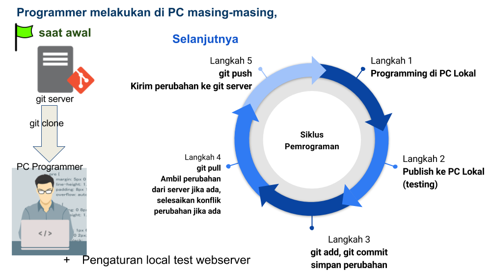

GIT
Dalam lingkungan pengembangan ini kita menggunakan git sebagai source code version control sehingga menggunakan paradigma pemrograman terdistribusi, masing-masing programmer memiliki salinan source code, web server dan bahkan database server di PC masing-masing. Mereka memodifikasi source code project yang sama di PC mereka masing-masing. Mereka juga mencoba (trial) aplikasi mereka di PC masing-masing. Jika aplikasi berjalan dengan baik di webserver lokal, programmer dapat mengirimkan modifikasi source code ke gitserver, kemudian project maintainer akan memeriksa source code mereka. Setelah source code dinilai layak dan bebas bug, project maintainer akan memasang (publish) source code ke webserver PRODUCTION.
Keamanan Server
Karena source code terdistribusi ke masing-masing PC programmer, setting yang berhubungan keamanan misal akses ke DB server PRODUCTION diharuskan tidak tertulis (hard-coded) di source code. sehingga setting di webserver trial dan di webserver PRODUCTION berbeda. Hanya webserver administrator yang mengetahui setting di webserver PRODUCTION.
Alur Pengembangan Aplikasi dengan GIT

Git Repository
Git Repository adalah suatu monitoring perubahan terhadap suatu kumpulan file atau folder. Biasanya berada di dalam folder yang dimonitor. Git repository bisa berada di PC lokal dan di remote/server. Lingkungan pengembangan aplikasi ESD-Application memiliki git repositories server, yang berfungsi sebagai penampung project-project yang sedang/sudah dikerjakan oleh tim developer aplikasi inhouse.
Alamat intranet git repositories server ESD-Application di https://artemisdev.polytron.co.id:3000.
Satu repository mewakili satu project aplikasi, masing-masing developer dapat meng-clone repository ke PC lokal masing-masing, dan/atau ke repository milik developer tersebut di repository server.
Berikut ini cara melakukan clone git repository dari server
mkdir /d/gits
cd /d/gits/
git clone [url_git_repository_sumber] [nama_folder_local_repository]
Anda juga bisa clone git repository dari folder lain di PC lokal Anda.
Perintah untuk menjadikan suatu folder menjadi git repository di PC lokal Anda adalah sebagai berikut,
cd /d/gits
mkdir my-project-1
cd my-project-1
git init
Git repository yang di PC lokal Anda dapat diedit isi folder seperti folder biasa.
Sedangkan git repository di server hanya berisi informasi perubahan isi file di repository tersebut, repository ini disebut bare repository. Anda dapat membuat bare repository di PC lokal Anda dengan perintah berikut,
cd /d/gits
mkdir my-project-2
cd my-project-2
git init --bare
Di dalam bare repository tidak terdapat file dan folder isi dari repository tersebut, jadi tidak memungkinkan editing di bare repository.
Perintah git yang sering digunakan
Git Remote Repository
git repository di lokal dapat memiliki remote repository di server ataupun di lokasi lain dalam PC tersebut/USB flashdisk.
untuk melihat remote repository yang sudah terdaftar di repository itu
git remote
git remote -v
untuk menambahkan remote repository baru
git remote add [alias_remote_repository] [url_remote_repository]
git remote add flash /e/gits/projectname
git remote add dev https://artemisdev.polytron.co.id:3000/appdev/projectname
Remote repository sumber dari proses git clone akan disebut dengan alias origin
untuk menghapus remote repository dari pc lokal
git remote remove [alias]
git remote remove flash
Git add
Untuk menambahkan file/folder ke daftar file/folder yang di-monitor/di-track perubahannya.
git add *.php
git add -A
git add --all
git add -A digunakan untuk menambahkan/update semua file/folder yang ada di path sekarang ke proses staging git.
tahapan umum dalam git: untracked/modified files -> staged changes -> commited changes
Git status
Untuk melihat status git repository saat ini
git status
akan memperlihatkan status file/folder dalam repository, apakah ada perubahan/ file baru / status commit.
Git commit
untuk menyimpan perubahan ke dalam git repository.
git commit -a -m "keterangan commit"
-aartinya secara otomatis akan menambahkan semua file yang dimodif dan dihapus ke dalam staging git sebelum di-commit.-m "pesan"artinya menambahkan keterangan commit langsung dari parameter setelahnya.
Setiap commit mempunyai commitID tertentu, Untuk mendapatkan beberapa commit terakhir dapat digunakan alias berikut * HEAD = commit terakhir. * HEAD^ = 1 commit sebelum commit terakhir. * HEAD~2 = 2 commit sebelum commit terakhir. * dst...
Git log
untuk melihat log/history proses commit pada repository git.
git log
untuk keluar dari tampilan git log, gunakan tombol q.
Git diff
untuk menampilkan perubahan antara masing-masing commit, commit dan working tree, dan lain-lain.
git diff HEAD filename
git diff HEAD
git diff branchname
git diff commitID filename
HEAD adalah alias dari commitID terakhir yang di-commit.
Git Branch
Git repository dapat memiliki satu atau lebih branch. Branch adalah suatu percabangan development. Branch utama disebut master.
Cara melihat branch yang dimiliki suatu repository
$ git branch
Cara membuat branch baru
$ git branch branchname
Cara menghapus branch
$ git branch -d branchname
Cara berpindah ke branch tertentu
$ git checkout branchname
Git Pull
Untuk menarik perubahan dari upstream remote repository ke repository lokal pada branch yang aktif, dan sekaligus melakukan automatic merge jika tidak ada konflik.
$ git pull remoteAlias branchname
Git Push
Untuk mengirim perubahan dari repository lokal branch yang aktif ke upstream remote repository. Jika terjadi konflik, proses push akan ditolak, konflik harus diselesaikan di repository lokal terlebih dahulu.
$ git push remoteAlias branchname
Git reset
Reset HEAD ke kondisi yang ditentukan
Contoh: undo add
edit filename1
git add filename1
git reset
kondisi working tree disamakan ke kondisi commit terakhir dengan membiarkan perubahan di filename1 tetap ada di working tree dengan status belum di-add ke staging.
Contoh: undo commit dan redo
git commit ...
git reset --soft HEAD^
edit
git commit -a -c ORIG_HEAD
- Suatu waktu, Anda ingat commit yang Anda lakukan sebelumnya tidak lengkap atau ada yang salah dengan keterangan commit sebelumnya. kembalikan working tree ke kondisi semula sebelumnya.
- Buat koreksi di working tree.
- proses "reset" menyalin head semula ke .git/ORIG_HEAD, melakukan commit ulang dengan pesan log baru. Jika Anda tidak ingin mengganti pesan log, Anda cukup menggunakan opsi -C.
Contoh: Undo Commit secara permanen
git commit ...
git reset --hard HEAD~3
Jika 3 commit sebelumnya dianggap jelek / tidak mau dipakai lebih lanjut. kita merasa perlu menghapus 3 commit terakhir. maka gunakan --hard untuk menghapus commit tersebut. JANGAN GUNAKAN ini jika Anda sudah membagikan commit yang Anda lakukan ke orang lain (sudah dikirim ke remote server).
Contoh: Undo merge atau pull
$ git pull
Auto-merging master
CONFLICT (content): Merge conflict in master
Automatic merge failed; fix conflicts and then commit the result.
$ git reset --hard
$ git pull . topic/branch
Updating from 41223... to 13134...
Fast-forward
$ git reset --hard ORIG_HEAD
- Mencoba update dari upstream, ternyata menghasilkan banyak konflik, saat Anda tidak ada waktu untuk menyelesaikan konflik dan melakukan merge, Anda bisa melakukannya lain waktu.
- "pull" belum melakukan merge, jadi
git reset --hardyang sinonim dengangit reset --hard HEADmenghapus semua perubahan yang belum di-commit dalam git maupun working tree. - Merge sebuah branch
topicke branch aktif sekarang berhasil. - Tapi Anda ingin meng-undo proses merge tersebut, proses "pull" or "merge" selalu meninggalkan tautan commit sebelumnya dari branch aktif dalam ORIG_HEAD, jadi dengan me-reset hard ke ORIG_HEAD akan mengembalikan git index dan working tree ke kondisi sebelumnya, dan mengembalikan juga tautan branch tersebut ke commit tersebut.
Contoh: Undo merge atau pull ke working tree yang kotor
$ git pull (1)
Auto-merging master
Merge made by recursive.
master | 20 +++++----
...
$ git reset --merge ORIG_HEAD (2)
- Saat di dalam working tree Anda masih ada modifikasi yang belum disimpan sekalipun, Anda dapat melakukan
git pullsecara aman ketika Anda tahu bahwa perubahan yang Anda tarik tidak berpengaruh pada file yang sedang Anda modif di working tree Anda. - Setelah memeriksa hasil merge dari proses pull, ternyata Anda menemukan branch yang Anda pull kurang sesuai dengan keinginan Anda. Anda dapat melakukan reset, menjalankan
git reset --hard ORIG_HEADakan mengembalikannya tapi proses ini akan menghapus juga modifikasi yang Anda lakukan di working tree Anda, untuk itu gunakangit reset --mergeuntuk membiarkan modifikasi Anda tetap ada di working tree Anda.
Contoh: Saat ada interupsi project
Seandainya pekerjaan Anda diinterupsi oleh tugas bug fix yang urgent dan Anda tidak ingin melakukan commit pekerjaan Anda saat ini, Anda butuh membuat branch lain untuk bugfix tersebut.
$ git checkout feature ;# you were working in "feature" branch and
$ work work work ;# got interrupted
$ git commit -a -m "snapshot WIP" (1)
$ git checkout master
$ fix fix fix
$ git commit ;# commit with real log
$ git checkout feature
$ git reset --soft HEAD^ ;# go back to WIP state (2)
$ git reset (3)
- Commit perubahan work-in-progress.
- Commit history kembali ke sebelum "snapshot WIP" commit.
- Update index untuk menunjukkan file yang termasuk dalam "snapshot WIP" commit sebagai belum di-commit.
ada cara lain untuk kasus ini yaitu menggunakan stash, yang akan dibahas pada bagian selanjutnya.
Contoh: Reset satu file tertentu
Seandainya Anda telah menambahkkan sebuah perubahan file ke staging index, kemudian tidak ingin menambahkan file tersebut ke commit berikutnya. Anda dapat mengeluarkan perubahan file yang sudah di-staging dengan git reset.
$ git reset -- frotz.c (1)
$ git commit -m "Commit files in index" (2)
$ git add frotz.c (3)
- menghapus perubahan dari staging.
- commit perubahan yang sudah di-staging.
- menambahkan kembali perubahan file tadi ke staging.
Contoh: Membiarkan perubahan di working tree dan menghapus commit sebelumnya
Seandainya Anda telah melakukan banyak perubahan yang secara logis dapat dipisahkan ke branch lain dan telah melakukan commit semua perubahan itu bersamaan. Kemudian, Anda memutuskan mungkin lebih baik kalo commit dilakukan dalam branch terpisah masing-masing bagiannya. Anda dapat menggunakan git reset untuk mengembalikan history tanpa mengubah isi file di lokal working tree, kemudian menambahkan satu persatu bagian untuk di-commit pada branch terpisah, gunakan git commit -c untuk memakai kembali keterangan commit sebelumnya.
$ git tag start
$ git checkout -b branch1
$ edit
$ git commit ... (1)
$ edit
$ git checkout -b branch2 (2)
$ git reset --keep start (3)
- melakukan commit bagian pertama di branch branch1.
- Anda ingin kalo perubahan yang sudah di-commit di branch1 tidak ingin Anda masukkan di branch2.
- Anda dapat menggunakan
git reset --keep <tagname>untuk menghapus perubahan terakhir di branch1.
Git Stash
Misal saat terjadi interupsi, yang mengharuskan kita berpindah ke kondisi source code tertentu, padahal kita tidak ingin hasil kerja kita hilang dan saat itu kita juga tidak ingin melakukan commit hasil kerja kita, kita dapat menggunakan stash.
Stash adalah tampungan sementara perubahan yang belum masuk tahap staging, untuk menyingkirkan sementara perubahan itu, saat kita bekerja dengan perubahan lain tanpa melakukan branching dan commit.
Modifikasi yang masuk dalam stash dapat dilihat dengan git stash list, diperiksa dengan git stash show, dan dikembalikan dengan git stash apply.
menjalankan git stash tanpa parameter sama dengan menjalankan git stash push. Sebuah stash secara default didaftar sebagai "WIP on branchname ...", tapi Anda juga dapat menambahkan komentar yang lebih deskriptif saat membuatnya dengan parameter git stash -m "komentar".
Stash terakhir yang Anda buat akan tersimpan dalam refs/stash. Stash yang lebih lama akan tersimpan dalam reflog dari referensi ini dan dapat dinamai menggunakan sintaks reflog, misal: stash@{0} adalah stash yang paling terakhir dibuat, stash@{1} adalah stash 1 sebelum yang terakhir, stash@{2.hours.ago} juga mungkin digunakan). Stash juga dapat direferensikan dengan hanya menyebutkan stash index-nya, misal: integer n sama dengan stash@{n}.
Contoh: Pull ke Working Tree yang tidak bersih
Ketika Anda sedang mengerjakan suatu perubahan, Anda mendapat kabar bahwa di upstream repository ada perubahan yang kemungkinan berkaitan dengan yang sedang Anda kerjakan. Ketika perubahan yang sedang Anda kerjakan tidak konflik dengan upstream, git pull akan otomatis merge.
Tetapi, jika terjadi konflik dengan upstream, Anda dapat melakukan stash terlebih dulu kemudian melakukan pull, selanjutnya unstash,
$ git pull
...
file foobar not up to date, cannot merge.
$ git stash
$ git pull
$ git stash pop
Contoh: Pekerjaan yang terinterupsi
Ketika Anda sedang mengerjakan suatu perubahan, tiba-tiba ada laporan bug, Anda harus memperbaikinya segera, Anda harus menyimpan pekerjaan Anda dengan commit ke branch sementara dan meninggalkannya, dan kemudian Anda akan kembali ke branch awal untuk melakukan perubahan perbaikan darurat (bug fix) seperti ini,
# ... hack hack hack ...
$ git checkout -b my_wip
$ git commit -a -m "WIP"
$ git checkout master
$ edit emergency fix
$ git commit -a -m "Fix in a hurry"
$ git checkout my_wip
$ git reset --soft HEAD^
# ... continue hacking ...
langkah di atas cukup rumit bukan? Anda dapat menggunakan git stash untuk menyederhanakan langkah di atas seperti sebagai berikut,
# ... hack hack hack ...
$ git stash
$ edit emergency fix
$ git commit -a -m "Fix in a hurry"
$ git stash pop
# ... continue hacking ...
Contoh: Testing partial commits
Anda dapat menggunakan git stash push --keep-index ketika Anda ingin membuat 2 atau lebih commit dari perubahan dalam work tree, dan ingin melakukan test sebelum masing-masing commit,
# ... hack hack hack ...
$ git add --patch filename.php # interactively select which part to be add to stage, add just first part to the index
$ git stash push --keep-index # save all other changes to the stash
$ edit/build/test first part
$ git commit -m 'First part' # commit fully tested change
$ git stash pop # prepare to work on all other changes
# ... repeat above five steps until one commit remains ...
$ edit/build/test remaining parts
$ git commit filename.php -m 'Remaining parts'
Git tag
Tag adalah semacam alias/reference untuk menunjuk ke commitID tertentu. Digunakan misal untuk membuat release version.
Tag akan disimpan di folder .git/refs/tags/.
Untuk melihat daftar tag yang sudah ada
git tag -l
Untuk membuat tag baru
$ git tag tagname
$ git tag v.0.0.1
untuk menghapus tag yang sudah ada
git tag -d tagname